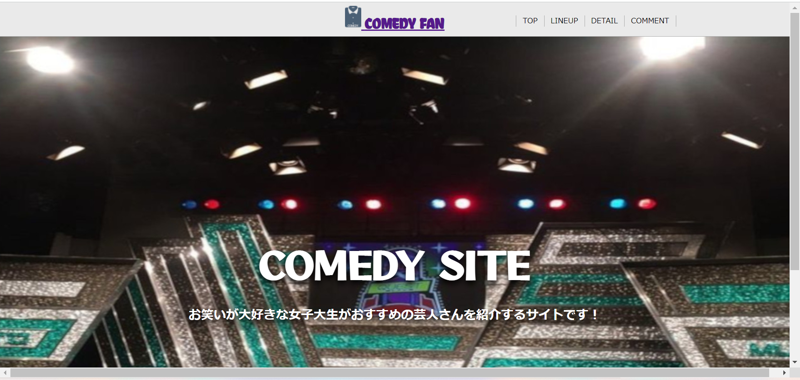
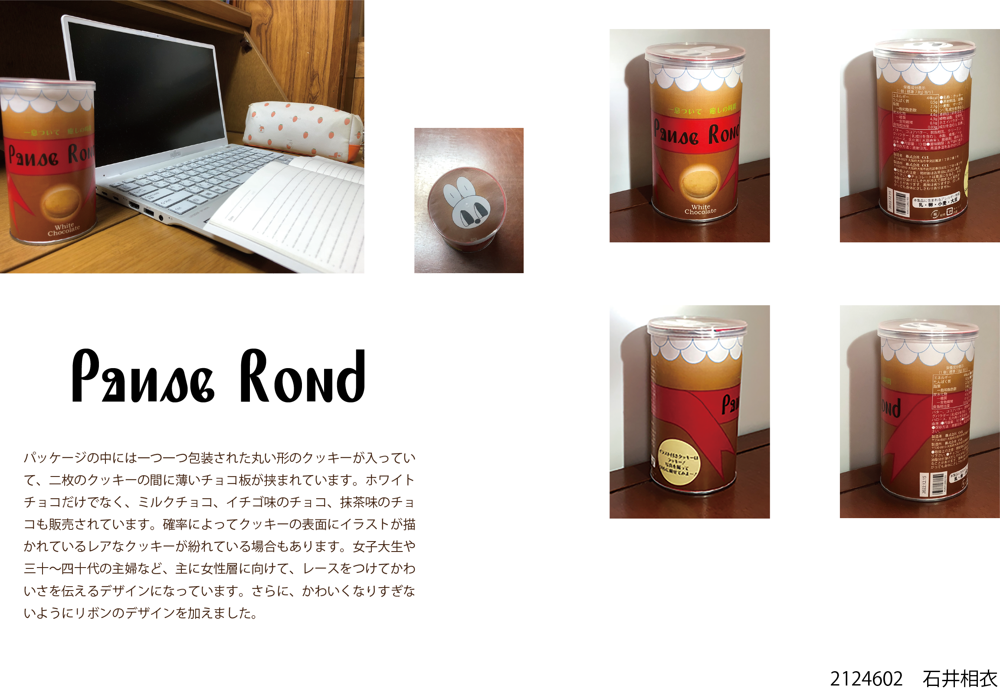
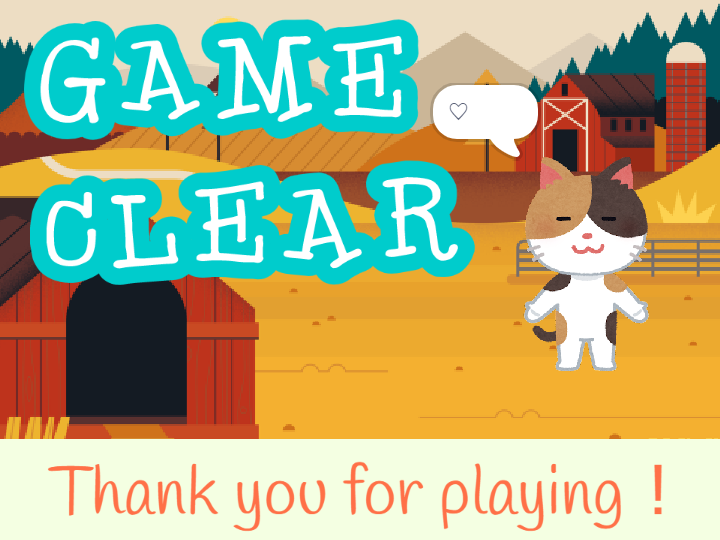
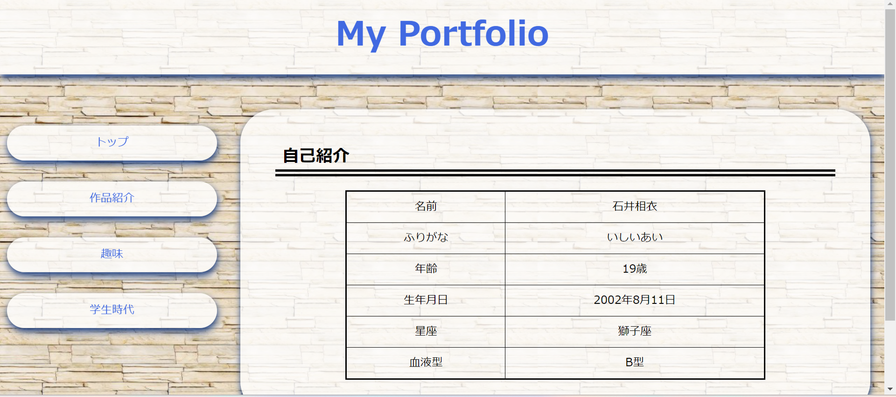
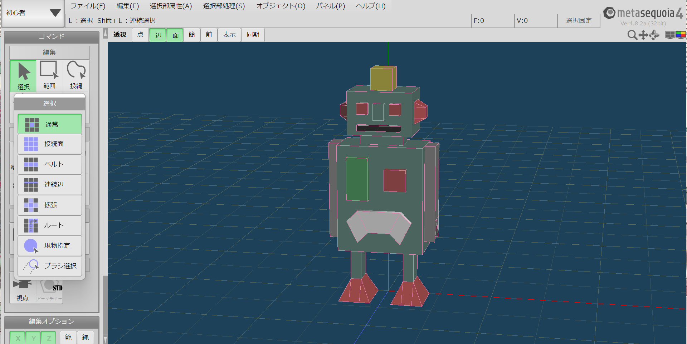

Back to Top

Web制作
2021.07 Brackets
1年前期の授業で制作しました。「自分のおすすめしたいものを紹介する」というテーマで取り組みました。この授業を経て、自分でWebサイトを制作することの楽しさを知りました。

フォトレタッチ
2021.07 Photoshop
1年前期の授業で制作しました。「自分と自分の好きなものを組み合わせて制作する」というテーマで取り組みました。レイヤーを変えながら画像を切り取るのに苦労しました。

インタラクティブデザイン
2021.07 p5.js
1年前期の授業で制作しました。テーマが「夏」だったので、七夕を表現しました。一つ一つの図形の座標を考えるのに苦労しました。

商品パッケージ
2022.01 Illustrator
1年後期の授業で制作しました。制作したパッケージ案を実際に缶に張り付けたり、最終的にプレゼンテーションシートにまとめたりと、本格的な商品パッケージ制作を体験できました。

ゲーム制作
2022.01 Scratch
1年後期の授業で制作しました。ゲーム制作は初めてでしたが、Scratch上での操作方法が分かりやすかったので、楽しく制作できました。

初代Portfolio
2022.07 VScode
2年前期の授業で制作しました。Web制作はこれで2回目でしたが、この授業ではレイアウトについても学ぶことができました。この授業を経て、改めてWeb制作の楽しさ、また難しさも実感しました。

CG制作
2022.07 Metasequoia,MAYA
2年前期の授業で制作しました。最終課題では、オリジナルのロボットを制作しました。この授業では一つ一つのオブジェクトの座標を打ち込んで制作したので、大変でした。
映像制作
2022.07 Adobe Premiere Pro
2年前期の授業で制作しました。テーマが「雨」だったので、雨と飴を掛け合わせた映像を制作しました。映像を自分で撮影することも大変でしたが、内容を考えることにも苦労しました。